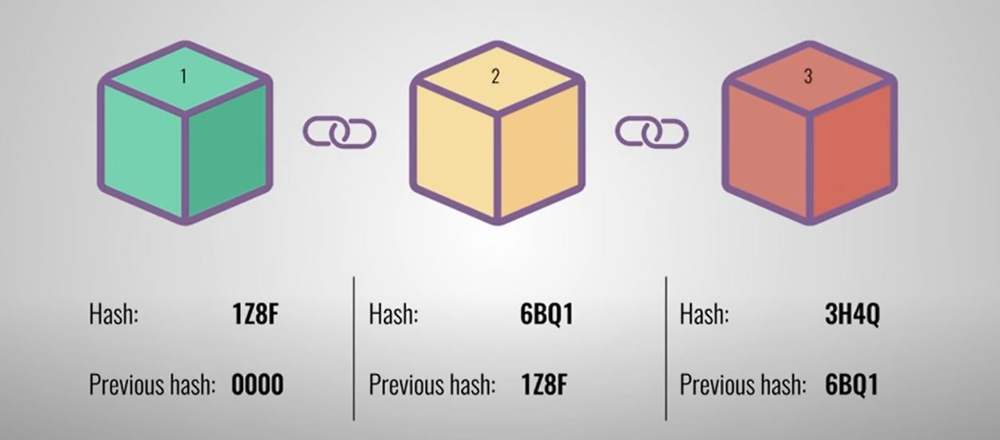

Blockchain & Cryptocurrencies
Craig Scofield
What is Blockchain and Cryptocurrency?
Blockchain
Blockchain is a decentralised ledger or database that stores all the information about the
transactions that utilise its technology. The Blockchain is a secure platform that uses Hash,
Proof-of-Work, and consensus.

Figure 1: Simply Explained (2017) Screenshot of what is a blockchain
Cryptocurrency
Cryptocurrency is a digital asset with a value built on Blockchain. Cryptocurrency is different to
traditional currency. If we look at the table below, we see a few differences.
| Tradional Currency | Cryptocurrency |
|---|---|
| Centralised | Decentralised across the globe |
| Managed by banks/governments | Not managed |
| Backed by physical goods (i.e gold) | Value agreed upon by users of that coin |
| Physical money and digital | Only in digital format |
Cryptocurrency uses this state-of-the-art technology called Blockchain. As you can see above, the
benefits and security Blockchain provides. The first Cryptocurrency that almost everyone has heard
of is the coin Bitcoin. The original cryptocurrency coin ‘Bitcoin’ was created by an unknown person
or group called Satoshi Nakamoto, which explains why a subunit of Bitcoin is called Satoshi. One
million Satoshi equals one bitcoin. Cryptocurrencies were developed to give users complete control
over their finances and away from the power of governments and banks.
The current number of cryptocurrencies is over 10,000, with each coin having its benefits and uses.
The value of these cryptocurrencies is decided by supply and demand. You can see below the process
when someone purchases or sends coins to another user.
- The transaction is agreed upon.
- The data is combined with other components of the block.
- Hash is created.
- Miners verify the integrity of the block.
- The node confirms the transaction.
- The end user receives their cryptocurrency.
Figure 2: RBA (2022) How does a Cryptocurrency Transaction Work
What can be done now?
DeFi: Decentralised Financial Applications are a
current trend that uses Cryptocurrency and
blockchain technology to provide financial products (loans, trading, etc.). Their goal is to provide
an alternative to traditional services by utilising the peer-to-peer technology of Blockchain. Defi
came about after the global financial crisis when confidence in the FIAT financial institutes
started declining.
What does the future hold?
The continual development of the Blockchain in the Cryptocurrency scene will pave the way for more
possible products in Finance, Business, Legal, Real estate, Logistics and Healthcare. There are
already applications on the Blockchain delving into these areas.
As this technology continues to grow, there will always be that element of society that will want to
abuse or use this technology for nefarious ventures. While it would be this threat that would cause
people to attempt to block this development, Blockchain technology has potential for huge
improvements in the future.
What will this technology likely impact?
Blockchain technology will likely impact industries across the board. For example, in the Finance
sector, it will open the availability to borrowing money, investing and earning existing
cryptocurrencies a user owns. As a result, traditional financial institutes have been monitoring
Cryptocurrency.
Unfortunately, being in a decentralised environment, Cryptocurrency has more risks than traditional
financial institutes. Some of these risks include no buyer protection, the value of the coin being
unstable, and as with all cryptocurrency dealings, you must use a digital wallet. If you lose the
unique code, there is no central entity that can assist you in recovering the said lost code, and in
turn, you lose whatever digital asset was associated with that wallet. As Blockchain technology
develops and matures, it will be more secure as they mitigate flaws and other issues.
Now, the people who would be most affected are the investors who back these projects and the people
involved in developing these projects. In the future, as this technology develops, it will allow
streamlining of the different processes, which could impact existing jobs, like real estate agencies
and Mortgage lenders. But on the other hand, they could create more jobs; again, the financial
sector is a prime example, as the Blockchain will allow lending and investing to users whom
traditional institutes would typically deny these services.
How will this affect me, my family, and my friends?
I have been dabbling in cryptocurrency for the last five years and have seen this phenomenon of
“Cryptocurrency” rise and fall. However, it has slowly become accepted in the broader community as
its application has become more investigated. In my daily life, I do not see any evidence of change,
but behind the scenes are things like making personal digital Identification more secure and more
widely available. As this technology develops, we see more applications built around Blockchain
technology.
What will be different in the future?
As someone with an extensive medical history, I am interested in watching the developing medical
applications and seeing how they would make life easier for individuals and medical providers. With
patient privacy a primary concern, it is easy to understand the benefits of blockchain technology
covering this concern.
How might this affect members of your family or friends?
For ethically minded friends and family, blockchain technology is changing the supply chain process,
tracking goods at every step, from harvesting, processing, and manufacturing to the consumer at the
other end. This tracking encourages more confidence in the buyer, knowing that everyone received a
fair wage and one exploited throughout the process.